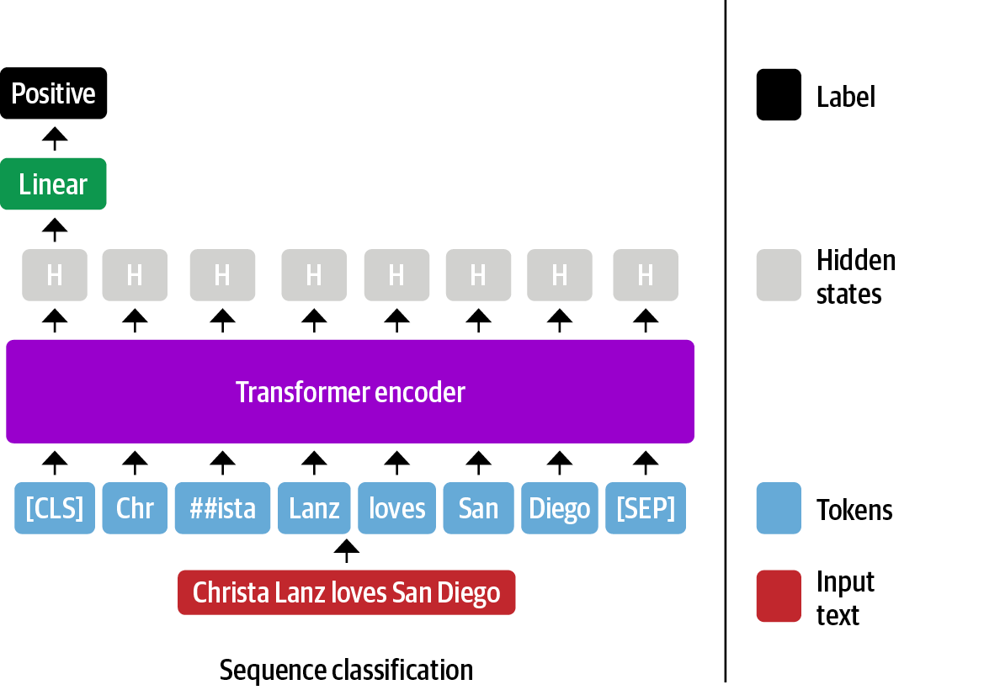
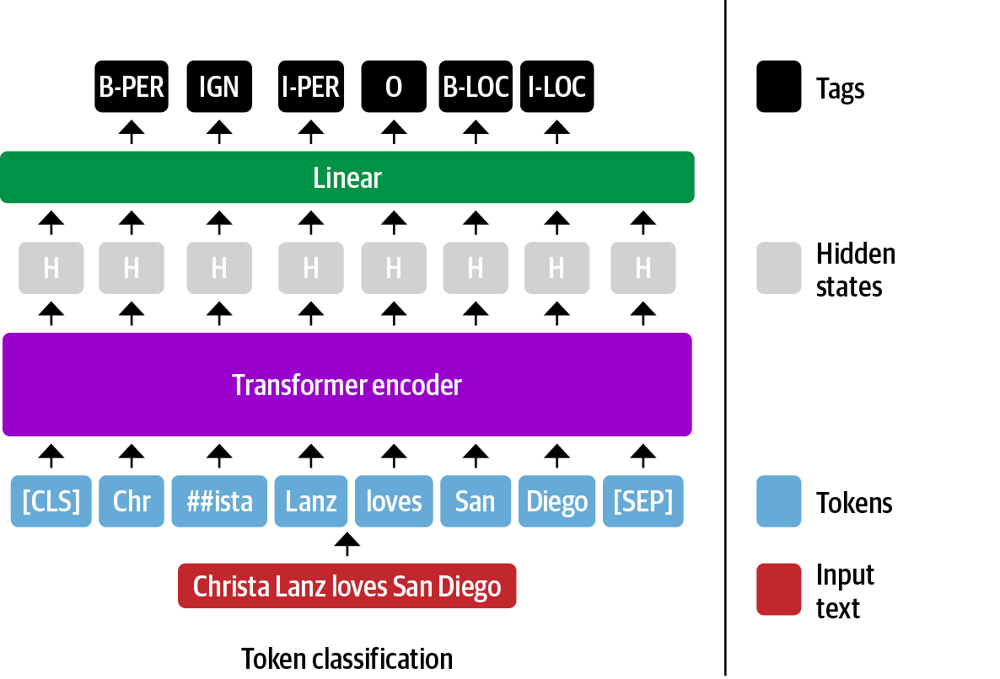
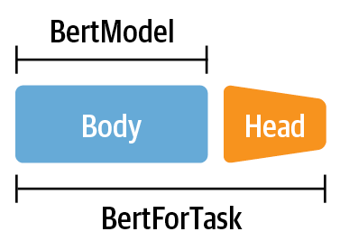

Named Entity Recognition (NER)
Topics: Token classification, BIO tagging, multilingual NER, per-entity evaluation
Project milestone: NER Agent extracting people, organisations, technologies, dates and locations; test on 5+ articles
Contents (14 sections)
- What You'll Learn
- 1. What is Named Entity Recognition?
- 2. The IOB2 Tagging Scheme
- 3. From Sequence Classification to Token Classification
- 4. A First NER System
- 5. Multilingual Transformers
- 6. The Subword Alignment Problem
- 7. Evaluating an NER Model
- 8. How the Model Was Fine-Tuned
- 9. Cross-Lingual Transfer
- 10. Error Analysis
- 11. From the Lesson to Your NER Agent
- 12. Check Your Understanding
- 13. Summary and Further Reading
From one label per sentence to one label per word. Level: intermediate · about 75 minutes · Hugging Face Transformers, Datasets, seqeval. The lesson follows Tunstall, von Werra & Wolf, Natural Language Processing with Transformers (Revised Edition, 2022), Chapter 4, "Multilingual Named Entity Recognition".
What You'll Learn
By the end of this lesson you will be able to:
- Explain what named entity recognition is and where it is used
- Read and write entity annotations in the IOB2 (BIO) scheme
- Describe how a transformer encoder is turned into a token classifier
- Align word-level labels with subword tokens, and explain the label
-100 - Evaluate an NER model at the entity level with
seqeval - Explain zero-shot cross-lingual transfer and decide when it is good enough
- Analyse the errors of an NER model and of its training data
Goal: a working multilingual NER pipeline that you can evaluate yourself, and a plan for the NER Agent of your project.
Prerequisites: Week 2. You should be comfortable with tokenisation, the idea of a pre-trained body with a task head, and precision, recall and F1.
Abbreviations used in this lesson
Each abbreviation is also explained where it first appears. In the text, an abbreviation with a dotted underline shows its meaning when you point at it, tap it, or reach it with the Tab key. Each one is marked at its first use in every section.
| Abbreviation | Stands for | In one line |
|---|---|---|
| NER | Named Entity Recognition | Finding names in text and labelling each with a type |
| PER, ORG, LOC | Person, Organisation, Location | The three entity types used in this lesson |
| IOB2 | Inside, Outside, Beginning, version 2 | The tagging scheme: B- starts an entity, I- continues it, O is outside any entity |
| BIO | Beginning, Inside, Outside | Another name for the same scheme, with the letters in a different order |
| IGN | Ignored | A token position that the loss skips; stored as the label ID -100 |
| BERT | Bidirectional Encoder Representations from Transformers | The encoder-only model family from Week 2 |
| DistilBERT | Distilled BERT | The smaller, faster BERT used in Week 2 |
| mBERT | Multilingual BERT | BERT pre-trained on Wikipedia in many languages |
| RoBERTa | Robustly Optimized BERT Pretraining Approach | BERT with an improved pre-training recipe |
| XLM | Cross-lingual Language Model | An earlier family of multilingual models |
| XLM-R | XLM-RoBERTa | RoBERTa pre-trained on 100 languages; the model used in this lesson |
| MLM | Masked Language Modelling | Pre-training by hiding words and predicting them |
| BPE | Byte-Pair Encoding | A subword algorithm that repeatedly merges the most frequent pair of symbols |
[CLS], [SEP] |
Classification, Separator | BERT's special tokens at the start and the end of a sequence |
<s>, </s> |
Start and end of sequence | XLM-R's special tokens, with the same role |
| WikiANN, PAN-X | Wikipedia annotated for NER; its name in XTREME | The multilingual NER dataset used in this lesson |
| XTREME | Cross-lingual TRansfer Evaluation of Multilingual Encoders | A benchmark of multilingual tasks; PAN-X is one of them |
| F1 | F1-score | The harmonic mean of precision and recall |
| seqeval | Sequence labelling evaluation | The Python library that scores NER at the entity level |
| LLM | Large Language Model | A generative model such as those studied from Week 4 on |
| GPU, CPU | Graphics / Central Processing Unit | Training needs a GPU; running a trained model also works on a CPU |
1. What is Named Entity Recognition?
Named entity recognition (NER) finds the pieces of text that name real-world things and assigns each one a type. Such a piece is called a span: one word, or several words in a row, with a definite start and end. Amman is a span of one word and University of Petra is a span of three. The three types used throughout this lesson are PER (person), ORG (organisation) and LOC (location).
Dr. AlbannaPER teaches at the University of PetraORG in AmmanLOC.
Each highlighted span is one entity, and the small label after it is its type. This sentence has three entities, although it has ten words.
Two things make this harder than it looks. An entity can span several words, so the model must find where it starts and where it ends. And the same word can belong to different types depending on its context: Petra is a location when it means the ancient city and part of an organisation in University of Petra.
Where NER is used
- Structured data from text: turn a collection of documents into a table of who, where and which organisation.
- Search: let a search engine index and filter by the entities a document mentions.
- Insight from company documents: find the people, suppliers and places named in contracts, reports or support tickets.
In the course project, the NER Agent does the first of these. It reads the sources that the Research Agent collected and gives the Analyzer a structured list of the entities they mention.
The workflow is the same four-stage pipeline as in Week 2. Only the model head and the way labels are prepared change.

2. The IOB2 Tagging Scheme
A classifier outputs one label per item, but an entity is a span of several items. The IOB2 scheme solves this by giving every word a tag that says both the entity type and the position of the word inside the entity.
What the name means. IOB stands for Inside, Outside, Beginning, the three kinds of tag. The scheme is often called BIO, which is the same three letters in a different order. The 2 marks the second version of the scheme, in which every entity starts with a
B-tag. In the original version,B-was used only when an entity came directly after another entity of the same type.
The three kinds of tag are:
B-XXX: the word begins an entity of type XXX.I-XXX: the word is inside an entity of type XXX, continuing the one that started earlier.O: the word is outside any entity.
| Word | Dr. | Albanna | teaches | at | the | University | of | Petra | in | Amman |
|---|---|---|---|---|---|---|---|---|---|---|
| Tag | B-PER | I-PER | O | O | O | B-ORG | I-ORG | I-ORG | O | B-LOC |
Why a separate B- tag is needed. Without it, two entities of the same type that stand next to each other would merge into one. In "He visited Amman Irbid and Aqaba", the tags B-LOC B-LOC O B-LOC keep Amman and Irbid apart; with only LOC LOC O LOC they would read as a single place called "Amman Irbid".
How many classes? With k entity types there are \(2k + 1\) tags: a B- and an I- tag for each type, plus O. For PER, ORG and LOC that gives seven classes: O, B-PER, I-PER, B-ORG, I-ORG, B-LOC, I-LOC.
Valid sequences. An I-XXX tag must follow a B-XXX or I-XXX tag of the same type. A sequence such as O I-ORG is not valid IOB2, although a model can still produce it, because each word is classified separately.
Animation: tagging a sentence. Step through the sentence one token at a time and watch each word receive its B-, I- or O tag. Stop when the whole sentence is tagged; the last two steps of the animation, spans and scoring, belong to Section 7.
Mini-challenge: tag by hand
Write the IOB2 tags for this sentence, then check your answer.
Lina Haddad works for Orange Jordan in Irbid.
Show the answer
B-PER I-PER O O B-ORG I-ORG O B-LOC O — nine tags, because the final full stop is a token as well and it is tagged O.
3. From Sequence Classification to Token Classification
In Week 2 the model read a whole tweet and produced one label. The hidden state of the special [CLS] token (short for classification; it is placed at the start of every input) stood for the whole sequence, and a single linear layer turned it into class scores.

[CLS] position. Figure from the companion repository of Tunstall et al. (2022), Apache 2.0 licence.NER uses the same encoder and almost the same head. The difference is that every hidden state goes through the linear layer, so the model produces one tag per token. This is why NER is called a token classification task.

IGN marks a subword that is ignored, explained in Section 6. Figure from the companion repository of Tunstall et al. (2022), Apache 2.0 licence.| Sequence classification (Week 2) | Token classification (Week 3) | |
|---|---|---|
| Input to the head | hidden state of [CLS] only |
hidden state of every token |
| Output shape | [batch, classes] |
[batch, tokens, classes] |
| Labels per example | one | one per word |
| Typical metric | accuracy, F1 per class | precision, recall, F1 per entity |
Body and head
A pre-trained transformer is split into two parts. The body contains the embeddings and the transformer layers; it is independent of the task. The head is the last, task-specific layer. Changing the task means keeping the body and replacing the head.

BertModel is the body alone. A class named …For<Task> adds a head for that task. Figure from the companion repository of Tunstall et al. (2022), Apache 2.0 licence.In the Transformers library the class name tells you the head: AutoModelForSequenceClassification in Week 2, AutoModelForTokenClassification this week. The token classification head is small. It is a dropout layer followed by one linear layer that maps each hidden state (768 values in a base-size model) to the seven tag scores:
# The whole token-classification head, as PyTorch code (for reading, not for running)
import torch.nn as nn
class TokenClassificationHead(nn.Module):
def __init__(self, hidden_size=768, num_labels=7, dropout=0.1):
super().__init__()
self.dropout = nn.Dropout(dropout)
self.classifier = nn.Linear(hidden_size, num_labels)
def forward(self, hidden_states): # [batch, tokens, hidden_size]
return self.classifier(self.dropout(hidden_states)) # [batch, tokens, num_labels]When a body is loaded with a new head, the body starts from its pre-trained weights and the head starts from random values. Before fine-tuning, such a model outputs meaningless tags. Fine-tuning on labelled sentences is what makes the head useful, exactly as in Week 2.
4. A First NER System
Fine-tuning a model of this size needs a GPU, so in this lesson you start from a model that is already fine-tuned: the checkpoint the textbook authors trained in Chapter 4 and published on the Hugging Face Hub. Section 8 shows how it was made.
The pipeline function wraps the three steps (tokenise, run the model, turn tag scores back into entities) into one call:
▶ Try it examples run inside this page, in your web browser — good for quick experiments with plain Python, NumPy, pandas, scikit-learn and matplotlib. From here on the examples need more:
- Everything else → the course notebook. PyTorch, Transformers, LangChain, LangGraph, MCP servers, Ollama, Django, Playwright and Streamlit need a full Python installation, large libraries, or programs that keep running — a web page has none of these. 📓 Open in notebook starts a free cloud machine already set up for this course (a GitHub codespace) and shows a link that opens this lesson with its Jupyter notebook beside it. There, the button on each example takes you to the notebook cell that holds it. Use the notebook for all your coursework, so everything runs in one environment (how it works).
from transformers import pipeline
checkpoint = "transformersbook/xlm-roberta-base-finetuned-panx-all"
ner = pipeline("token-classification", model=checkpoint, aggregation_strategy="simple")
sentences = [
"Dr. Albanna teaches at the University of Petra in Amman.",
"Angela Merkel wurde in Hamburg geboren.",
"تقع جامعة البترا في مدينة عمّان.",
]
for s in sentences:
print(s)
for e in ner(s):
print(f" {e['entity_group']:4} {e['word']!r:32} score={e['score']:.2f}")The first run downloads the model (about 1 GB), so allow a minute or two.
What aggregation_strategy="simple" does. The model predicts a tag for every subword token. Without aggregation, the pipeline returns those raw pieces one by one. With "simple", it merges neighbouring tokens that belong to the same entity and returns whole spans with their type, their text, a confidence score, and their character positions (start, end) in the original string.
One model, three languages. The same model handled English, German and Arabic. It was fine-tuned on German, French, Italian and English only, so the Arabic sentence is a first look at cross-lingual transfer, the subject of Section 9. Check its Arabic answer carefully; you will measure how reliable it is later in the lesson.
Mini-challenge: break it
Try sentences that are likely to be difficult, and note what the model gets wrong:
- An entity written without capital letters:
"i met sara at petra university". - A word that changes type with context:
"Jordan scored 30 points"and"Jordan borders Saudi Arabia". - A sentence that mixes two languages (code-switching):
"The meeting is in عمّان next week with Dr. Khalid".
5. Multilingual Transformers
A model such as DistilBERT was pre-trained on English text only. For other languages there are two options: find a model pre-trained on that language, or use one model pre-trained on many languages at once. The second option is attractive when your documents are in several languages, because maintaining one model is far easier than maintaining one per language.
- mBERT (multilingual BERT) was one of the first. It has the architecture and the pre-training objective of BERT, with Wikipedia articles in many languages as its pre-training corpus.
- XLM-RoBERTa (XLM-R) replaced it as the usual choice. The name joins two earlier models: XLM, the cross-lingual language model, and RoBERTa, a robustly optimized BERT pretraining approach, which is BERT trained with an improved recipe. XLM-R is pre-trained with masked language modelling (MLM) only: words are hidden and the model learns to predict them. Its text covers 100 languages. Its corpus is far larger than mBERT's: Wikipedia plus 2.5 terabytes of web text from Common Crawl. The extra data matters most for languages with little Wikipedia content.
A multilingual model receives no signal telling it which language it is reading. Even so, the representations it learns generalise across languages: after fine-tuning on one language it can often perform the task on another. This is zero-shot cross-lingual transfer. It also makes such models suitable for code-switching, where a speaker mixes languages inside one conversation or one sentence, as many Arabic speakers do with English.
A closer look at tokenisation
One tokeniser must serve 100 languages, including languages that do not separate words with spaces. XLM-R therefore uses SentencePiece instead of BERT's WordPiece, with a vocabulary of about 250,000 tokens, several times larger than that of a monolingual model.
Tokenisation is itself a pipeline of four steps:
- Normalisation cleans the raw string: for example Unicode normalisation, removing extra spaces, and in some models lowercasing.
- Pre-tokenisation splits the text into word-like units, usually at spaces and punctuation. This step does not suit every language, because some languages have no spaces between words.
- The tokeniser model splits each unit into subwords from the learned vocabulary. WordPiece, BPE (Byte-Pair Encoding) and Unigram are three algorithms for this. This is the only step that is trained on data.
- Post-processing adds the special tokens, such as
[CLS]and[SEP](separator) for BERT, or<s>and</s>(start and end of sequence) for XLM-R.
Compare the two tokenisers on the same sentence:
from transformers import AutoTokenizer
bert_tok = AutoTokenizer.from_pretrained("bert-base-cased")
xlmr_tok = AutoTokenizer.from_pretrained("xlm-roberta-base")
text = "Sara teaches NER in Amman!"
bert_tokens = bert_tok(text).tokens()
xlmr_tokens = xlmr_tok(text).tokens()
print("BERT :", bert_tokens)
print("XLM-R:", xlmr_tokens)
# SentencePiece keeps the spaces, so the original text can be rebuilt exactly
print("".join(xlmr_tokens).replace("▁", " "))Three differences are worth noticing in the output:
- Special tokens. BERT wraps the sequence in
[CLS]and[SEP]; XLM-R uses<s>and</s>. - How a split word is marked. WordPiece marks the continuation of a word with
##. SentencePiece marks the start of a word with the character▁(Unicode U+2581), which stands for the space before it. - Reversibility. Because SentencePiece records every space, joining the tokens and replacing
▁with a space gives back the original text, including the fact that there is no space before!. WordPiece loses that information. Treating the text as a raw stream of characters, spaces included, is what lets SentencePiece work without language-specific rules.
Animation: subword tokenisation. Type a common word, then a rare name such as Albanna or Momani, and watch the name break into several pieces while the common word stays whole. The animation uses WordPiece-style tokens, so continuation pieces are marked with ##. Keep the split name in mind: it is the starting point of the next section.
6. The Subword Alignment Problem
Here is the central practical difficulty of NER with transformers. The dataset has one label per word, but the model sees subword tokens. A word such as Albanna may be split into several tokens. Which of them carries the I-PER label?
The convention introduced with BERT, and followed here, is:
- the first subword of each word keeps the word's label;
- the remaining subwords of that word are ignored when the loss is computed;
- the special tokens (
<s>,</s>, padding) are ignored as well.
"Ignored" is expressed with the label ID -100. This number is not arbitrary: PyTorch's cross-entropy loss has a parameter ignore_index whose default value is -100, so any position with that label contributes nothing to the loss.
Copying the word's label to every subword would be simpler, but it breaks the scheme: if Albanna became three tokens all tagged B-PER, the tags would describe three separate people.
The tokeniser provides what is needed. When it is told that the input is already split into words (is_split_into_words=True), its output has a word_ids() method that says which word each token came from:
import pandas as pd
words = ["Dr.", "Albanna", "teaches", "at", "the", "University", "of", "Petra", "in", "Amman"]
tags = ["B-PER", "I-PER", "O", "O", "O", "B-ORG", "I-ORG", "I-ORG", "O", "B-LOC"]
encoding = xlmr_tok(words, is_split_into_words=True)
tokens = xlmr_tok.convert_ids_to_tokens(encoding["input_ids"])
word_ids = encoding.word_ids()
aligned, previous = [], None
for word_id in word_ids:
if word_id is None: # special token: <s> or </s>
aligned.append("IGN")
elif word_id == previous: # a later subword of the same word
aligned.append("IGN")
else: # first subword of a new word
aligned.append(tags[word_id])
previous = word_id
print(pd.DataFrame({"token": tokens, "word_id": word_ids, "label": aligned}).to_string())Every row marked IGN receives the label ID -100 during training. The function below does the same for a whole batch, working with label IDs instead of tag names. It is the standard preprocessing step for any token classification dataset:
def tokenize_and_align_labels(examples):
tokenized = xlmr_tok(examples["tokens"], truncation=True, is_split_into_words=True)
all_labels = []
for i, word_labels in enumerate(examples["ner_tags"]):
previous, label_ids = None, []
for word_id in tokenized.word_ids(batch_index=i):
if word_id is None or word_id == previous:
label_ids.append(-100)
else:
label_ids.append(word_labels[word_id])
previous = word_id
all_labels.append(label_ids)
tokenized["labels"] = all_labels
return tokenized
batch = {"tokens": [words], "ner_tags": [[1, 2, 0, 0, 0, 3, 4, 4, 0, 5]]}
print(tokenize_and_align_labels(batch)["labels"][0])Padding the labels too. Sentences in a batch have different lengths, so the shorter ones are padded and an attention mask tells the model which positions are real, as in Week 2.

In token classification the labels are sequences as well, so they must be padded to the same length. DataCollatorForTokenClassification does this and pads the labels with -100, which means padding positions are ignored by the loss in the same way as the extra subwords.
Mini-challenge: predict before you run
The German word Einwohnern is split by XLM-R into two tokens. If the word is tagged O (ID 0), what are the label IDs of its two tokens? Then explain why the answer is not [0, 0].
Show the answer
[0, -100]. Only the first subword keeps the label. The second one is masked so that each word contributes exactly once to the loss and to the evaluation, however many pieces the tokeniser cuts it into.
7. Evaluating an NER Model
NER is evaluated with precision, recall and F1, as in Week 2, with one important change: the unit that is counted is the entity, not the token. A predicted entity is correct only if its type and both of its boundaries match the gold annotation exactly. Getting two of the three words of University of Petra right earns nothing.
Animation: precision, recall and F1. A reminder from Week 2 before the scores are applied to entities. Move the threshold and watch precision and recall pull in opposite directions while F1 balances them.
Why not token accuracy? In ordinary text most tokens are O. A model that tags every token as O finds no entity at all and still scores a high accuracy. Entity-level F1 gives that model zero.
The seqeval library (sequence labelling evaluation) implements entity-level scoring. It expects lists of tag sequences, one list per sentence:
from seqeval.metrics import classification_report
y_true = [["B-PER", "I-PER", "O", "O", "O", "B-ORG", "I-ORG", "I-ORG", "O", "B-LOC"],
["B-LOC", "O", "O", "B-PER"]]
y_pred = [["B-PER", "I-PER", "O", "O", "O", "B-ORG", "I-ORG", "B-LOC", "O", "B-LOC"],
["B-LOC", "O", "O", "B-PER"]]
print(classification_report(y_true, y_pred))Only one tag out of fourteen is wrong (Petra is tagged B-LOC instead of I-ORG), yet the report shows two errors: the organisation is no longer matched, which lowers ORG recall, and a location has appeared that does not exist, which lowers LOC precision. The first browser example in Try it yourself computes the same scores by hand so that you can see where each number comes from.
Animation: scoring by entity. Open the tagging animation again and go to its last two steps. The predicted tags are turned into spans and compared with the gold spans, with the same Petra mistake as in the example above: one wrong token, one missed organisation, one location that does not exist.
The report ends with averages. The micro average pools all entities before computing the scores, so frequent types weigh more. The macro average computes the scores for each type and then takes their plain mean, so every type counts equally. Report both when the types are unbalanced.
Evaluate the checkpoint yourself
The next example measures the checkpoint from Section 4 on real test data, without any training, so it runs on the CPU of your codespace. The dataset is WikiANN: Wikipedia sentences in many languages, annotated with PER, ORG and LOC in the IOB2 format. It is also known as PAN-X, the name it has inside the XTREME benchmark (Cross-lingual TRansfer Evaluation of Multilingual Encoders), and it is the dataset used in the textbook chapter.
import torch
from datasets import load_dataset
from transformers import AutoModelForTokenClassification, AutoTokenizer
from seqeval.metrics import classification_report, f1_score
tok = AutoTokenizer.from_pretrained(checkpoint)
model = AutoModelForTokenClassification.from_pretrained(checkpoint).eval()
id2label = model.config.id2label
def predict_tags(words):
"""One predicted tag per word: the prediction for the word's first subword."""
enc = tok(words, is_split_into_words=True, truncation=True, return_tensors="pt")
with torch.no_grad():
pred_ids = model(**enc).logits[0].argmax(dim=-1).tolist()
tags, previous = [], None
for position, word_id in enumerate(enc.word_ids()):
if word_id is not None and word_id != previous:
tags.append(id2label[pred_ids[position]])
previous = word_id
return tags
def evaluate(lang, n=200):
test = load_dataset("unimelb-nlp/wikiann", lang, split="test").shuffle(seed=0)
test = test.select(range(min(n, len(test))))
names = test.features["ner_tags"].feature.names
y_true, y_pred = [], []
for example in test:
pred = predict_tags(example["tokens"])
gold = [names[i] for i in example["ner_tags"]][:len(pred)]
y_true.append(gold)
y_pred.append(pred)
return y_true, y_pred
for lang in ["de", "en", "ar"]:
y_true, y_pred = evaluate(lang)
print(f"\n=== {lang} === entity-level F1 = {f1_score(y_true, y_pred):.3f}")
print(classification_report(y_true, y_pred))predict_tags applies the convention of Section 6 in the other direction: the model predicts a tag for every token, and only the prediction at the first subword of each word is kept.
German and English were in the model's training data. Arabic was not, so its score is a zero-shot result. Compare the three F1 values, and compare the entity types within each language. A sample of 200 sentences gives a rough estimate; raise n for a steadier one.
8. How the Model Was Fine-Tuned
You have used the checkpoint; this section shows how it was produced. The code is for reading. Fine-tuning XLM-R on thousands of sentences takes minutes on a GPU and hours on the CPU of a codespace, which is why the lesson starts from the published result.
Fine-tuning in one paragraph. The model starts as the pre-trained XLM-R body with a new, randomly initialised token classification head. It is shown labelled sentences in small batches. For each batch it predicts a tag for every token, the cross-entropy loss measures how far those predictions are from the gold tags at every position that is not labelled -100, and backpropagation adjusts all the weights, body and head, by a small step. Repeating this over the whole training set a few times (each pass is an epoch) turns a general language model into an NER tagger. After every epoch the model is scored on the validation set, which it never trains on, to check that it is improving on unseen sentences.
Animation: which weights change. Switch between feature extraction, fine-tuning and training from scratch. The fine-tuning mode is the one used here: every weight is trainable, the body moves a little from its pre-trained values, and the new head moves a lot.
The recipe has the same parts as in Week 2, and three of them are specific to token classification: the label alignment function, the data collator that pads labels, and the entity-level metric.
from datasets import load_dataset
from transformers import (AutoConfig, AutoModelForTokenClassification, AutoTokenizer,
DataCollatorForTokenClassification, Trainer, TrainingArguments)
from seqeval.metrics import f1_score
import numpy as np
model_name = "xlm-roberta-base"
xlmr_tok = AutoTokenizer.from_pretrained(model_name)
# 1. Data: German WikiANN / PAN-X, with labels aligned to subwords (Section 6)
panx_de = load_dataset("unimelb-nlp/wikiann", "de")
tag_names = panx_de["train"].features["ner_tags"].feature.names
encoded = panx_de.map(tokenize_and_align_labels, batched=True,
remove_columns=["tokens", "ner_tags", "langs", "spans"])
# 2. Model: pre-trained body + a new 7-class token-classification head
config = AutoConfig.from_pretrained(model_name, num_labels=len(tag_names),
id2label=dict(enumerate(tag_names)),
label2id={t: i for i, t in enumerate(tag_names)})
model = AutoModelForTokenClassification.from_pretrained(model_name, config=config)
# 3. Metric: entity-level F1, skipping every position labelled -100
def compute_metrics(eval_pred):
preds = np.argmax(eval_pred.predictions, axis=2)
y_true, y_pred = [], []
for pred_row, label_row in zip(preds, eval_pred.label_ids):
keep = label_row != -100
y_true.append([tag_names[i] for i in label_row[keep]])
y_pred.append([tag_names[i] for i in pred_row[keep]])
return {"f1": f1_score(y_true, y_pred)}
# 4. Training
args = TrainingArguments(output_dir="xlmr-panx-de", num_train_epochs=3,
per_device_train_batch_size=24, per_device_eval_batch_size=24,
eval_strategy="epoch", weight_decay=0.01, save_strategy="no")
trainer = Trainer(model=model, args=args,
data_collator=DataCollatorForTokenClassification(xlmr_tok),
compute_metrics=compute_metrics,
train_dataset=encoded["train"], eval_dataset=encoded["validation"])
trainer.train()Reading the code, step by step
- Data.
load_datasetreturns the training, validation and test splits.mapappliestokenize_and_align_labelsfrom Section 6 to every split in batches. The original columns are then removed, so each example keeps only what the model needs:input_ids,attention_maskand the alignedlabels. - Model.
AutoConfigrecords the number of tags and the two mappings between tag names and IDs.from_pretrainedthen loads the pre-trained body and attaches a head with seven outputs. Because the mappings are saved inside the model, thepipelinein Section 4 can reportPERorLOCinstead of a class number. - Metric. After each epoch the
Trainerpasses the model's scores, of shape[sentences, tokens, 7], and the gold label IDs tocompute_metrics. The function takes the highest-scoring tag at each position, drops every position labelled-100, converts the IDs to tag names, and returns the entity-level F1 fromseqeval. Without the-100filter, special tokens, extra subwords and padding would all be scored as if they were words. - Training.
TrainingArgumentsholds the settings: three epochs, batches of 24 sentences, an evaluation at the end of every epoch, and a small weight decay that discourages large weights.DataCollatorForTokenClassificationbuilds each batch, padding the inputs and padding the labels with-100(Section 6).trainer.train()runs the loop described above.
How the three NER-specific parts fit together. The alignment function decides which positions count by writing -100 everywhere else. The collator keeps that decision intact when sentences of different lengths are put into one batch. The loss and the metric both respect it: the loss skips those positions during training, and compute_metrics removes them before scoring. If any one of the three is wrong, training still runs and still prints a number, which is why Section 10 begins with ways a result can look good and be wrong.
In the textbook, three epochs on about 12,600 German sentences bring the validation F1 from 0.82 after the first epoch to about 0.86 after the third.
9. Cross-Lingual Transfer
The textbook chapter sets up a realistic scenario: a customer in Switzerland, with documents in German, French, Italian and English. The training data is sampled in the proportions in which those languages are spoken there, so German dominates (about 63%) and English is rare (about 6%). Labelled data in a minority language is often scarce in practice, because annotating entities needs people who read that language well.
Three fine-tuning strategies are compared, each evaluated on the test set of every language:
| Fine-tuned on | German | French | Italian | English |
|---|---|---|---|---|
| German only (zero-shot for the other three) | 0.868 | 0.714 | 0.692 | 0.589 |
| Each language separately | 0.868 | 0.851 | 0.819 | 0.707 |
| All four languages together | 0.868 | 0.865 | 0.858 | 0.787 |
Entity-level F1 on the test set, from Tunstall et al. (2022), Chapter 4.
What the table shows
- Zero-shot transfer works, at a price. A model that has never seen a labelled French sentence reaches 0.71 on French. That is about 15 points below what it achieves on German, and far above what an untrained head would give.
- Training on all languages together is best everywhere. The multilingual model matches or beats the model trained on each language alone, and the gain is largest for the languages with the least data: Italian improves from 0.82 to 0.86 and English from 0.71 to 0.79.
- Adding one language helps the others. In the chapter, adding French to the German training data raised the Italian and English scores by roughly ten points, although no Italian or English labels were added.
- Distance between languages matters. Transfer tends to be stronger between related languages and weaker across language families or writing systems. The chapter also reports a surprise: the German model did worst on English, although both are Germanic languages. Treat relatedness as a guide and measure the result.
When is zero-shot transfer good enough?
The chapter answers this with an experiment: fine-tune directly on French using 250, 500, 1,000, 2,000 and 4,000 labelled sentences, and compare each result with the zero-shot score from the German model.
- With 250 French sentences, direct fine-tuning reaches an F1 of only 0.14, far below the zero-shot 0.71.
- Zero-shot transfer stays competitive up to roughly 750 labelled sentences.
- With a few thousand sentences, direct fine-tuning reaches the level obtained on German.
The practical rule: if you have no labels, or only a few hundred, in the target language, start with transfer from a related language. Collect more labels only if the measured score is too low for your application, and then train on all languages together.
The limits. The authors note that this good behaviour usually disappears when the target language is very different from the fine-tuning language, or when it was not among the languages used in pre-training. Arabic is one of XLM-R's 100 pre-training languages, but it differs from German, French, Italian and English in script, in word structure, and in having no capital letters to signal a name. The Arabic score you measured in Section 7 shows how far transfer carries in that harder case.
10. Error Analysis
A single F1 value does not say what the model gets wrong. The chapter looks inside the German model by computing the loss of every token in the validation set and then asking which tokens, which tags and which sentences have the highest loss. Its findings are a good checklist for your own NER Agent.
Three ways a result can look good and be wrong
- Too many labels were masked with
-100by mistake, so the loss falls because there is little left to predict. - The metric function has a bug that overstates performance.
- The
Oclass is counted as an ordinary class. It is by far the largest one, so it inflates accuracy and F1.
What the analysis found
- Organisations are the hardest type.
B-ORGhad the highest average loss of all tags, and the confusion matrix showed that the start of an organisation was often mistaken for its continuation,I-ORG. Organisation names are long, varied and often contain ordinary words. The University of Petra error in Section 7 is a small instance of the same weakness. - Function words inside names cause trouble. Words such as the German von, der, in and und are usually
O, but they are also parts of entity names, so the model hesitates on them. English of behaves in the same way, as in University of Petra. - The data contain errors too. Among the sentences with the highest loss, the chapter found the United Nations and the Central African Republic annotated as persons, and a date annotated as an organisation. The model was right and the label was wrong.
The last point has a general explanation. The PAN-X annotations were produced automatically from Wikipedia, not by human annotators. Automatically generated labels are called a silver standard; labels written by people are a gold standard. Silver data are cheap and plentiful, and they contain systematic mistakes. One such pattern in PAN-X: Wikipedia titles often carry an explanation in parentheses, and the automatic process included the parentheses and their content in the entity.
The working method is a loop: train, inspect the highest-loss examples, correct the data or the code, and train again. An F1 measured against noisy labels also understates a good model, because the model is penalised for correct answers that disagree with wrong labels.
Mini-challenge: find the worst sentences
Reuse evaluate("de") from Section 7. Print the five sentences in which the predicted tags differ most from the gold tags, with words, gold tags and predictions side by side. For each one, decide whether the model or the annotation is at fault.
11. From the Lesson to Your NER Agent
The project milestone asks for an NER Agent that extracts people, organisations, technologies, dates and locations, tested on at least five articles. The model in this lesson covers three of these five. A fine-tuned NER model can only output the entity types it was trained on, so dates and technologies need another source. A practical first design combines three extractors:
| Entity type | Extractor | Why |
|---|---|---|
| Person, organisation, location | The fine-tuned transformer (Section 4) | Open-ended names that depend on context |
| Date | Rules (regular expressions) | Dates follow a small number of regular patterns |
| Technology | A term list (gazetteer) that you maintain | No public NER dataset labels technologies in the way your project needs |
The two rule-based extractors are plain Python:
import re
MONTHS = "January|February|March|April|May|June|July|August|September|October|November|December"
DATE_PATTERNS = [
rf"\b\d{{1,2}} (?:{MONTHS}) \d{{4}}\b", # 14 November 2026
rf"\b(?:{MONTHS}) \d{{1,2}}, \d{{4}}\b", # November 14, 2026
rf"\b(?:{MONTHS}) \d{{4}}\b", # November 2026
r"\b\d{4}-\d{2}-\d{2}\b", # 2026-11-14
r"\b(?:19|20)\d{2}\b", # 2017
]
TECHNOLOGIES = ["XLM-RoBERTa", "BERT", "Transformer", "LangChain", "LangGraph", "PyTorch", "ChromaDB"]
def find_dates(text):
found = []
for pattern in DATE_PATTERNS: # most specific pattern first
for m in re.finditer(pattern, text):
overlaps = any(m.start() < e and s < m.end() for s, e, _ in found)
if not overlaps:
found.append((m.start(), m.end(), m.group()))
return [{"type": "DATE", "text": t, "start": s, "end": e} for s, e, t in sorted(found)]
def find_technologies(text):
found = []
for term in sorted(TECHNOLOGIES, key=len, reverse=True): # longest term first
for m in re.finditer(rf"(?<!\w){re.escape(term)}(?!\w)", text):
overlaps = any(m.start() < e and s < m.end() for s, e, _ in found)
if not overlaps:
found.append((m.start(), m.end(), m.group()))
return [{"type": "TECH", "text": t, "start": s, "end": e} for s, e, t in sorted(found)]
article = ("The Transformer was introduced in 2017. On 14 November 2026 the team in Amman "
"compared BERT with XLM-RoBERTa and stored the results in ChromaDB.")
for entity in find_dates(article) + find_technologies(article):
print(entity)Both functions return the same fields as the transformer pipeline (a type, the text, and character positions), so the three result lists can be merged into one and sorted by position.
Design points for the agent
- Long articles. The model accepts at most 512 tokens. Split an article into paragraphs or sentences, run the model on each piece, and add the piece's offset to the
startandendpositions. - Normalise and count. The same entity appears many times and in several forms (University of Petra, Petra University, UOP). Decide how the agent merges them, and report each entity once with a count.
- Keep the evidence. Store the character positions and the confidence score with every entity, so that the Writer and Critic agents can check a claim against the source text.
- A language model as an extractor. From Week 4 on you can also ask a large language model (LLM) to extract entities with a prompt. That handles new types such as technologies without a term list, at the cost of speed, money and reproducibility. Whichever extractor you choose, evaluate it in the same way.
Testing on five articles. Choose five articles from your project's topic, and include at least one that is not in English if your sources are multilingual. For each article, write the list of entities you expect by hand; this is your gold standard. Run the agent, then report precision, recall and F1 per entity type, as in Section 7. The per-type breakdown shows which extractor needs work.
12. Check Your Understanding
1. A dataset has five entity types. How many classes does the token classifier have in the IOB2 scheme?
Eleven: a B- tag and an I- tag for each of the five types, plus O.
2. What is the difference between the heads used for sequence classification and for token classification?
Both are a linear layer on top of the encoder. For sequence classification it is applied to one hidden state, that of [CLS], and gives one label. For token classification it is applied to every hidden state and gives one tag per token.
3. Why are the later subwords of a word given the label -100?
So that each word is counted once, whatever the number of pieces the tokeniser produces. The value -100 is the default ignore_index of PyTorch's cross-entropy loss, so those positions add nothing to the loss.
4. A model tags every token as O on a test set in which 90% of the tokens are O. What are its token accuracy and its entity-level recall?
Its token accuracy is 90%, and its entity-level recall is zero, because it found none of the entities. This is why NER is reported with entity-level precision, recall and F1.
5. What does "zero-shot cross-lingual transfer" mean in this lesson?
A multilingual model is fine-tuned on labelled data in one language and then used on another language for which it has seen no labelled examples at all.
6. You have 300 labelled sentences in a new language and a good model for a related language. What should you try first?
Evaluate the existing model on the new language without further training. In the textbook's experiment, zero-shot transfer from a related language stayed competitive with direct fine-tuning up to about 750 labelled sentences. The 300 sentences are more valuable as a test set, or added to a multilingual training set.
7. What is a silver-standard dataset, and why does it matter for evaluation?
A dataset whose labels were produced automatically instead of by human annotators. It contains systematic labelling errors, so a model can be penalised for correct predictions, and the measured F1 is only as trustworthy as the labels.
13. Summary and Further Reading
What you learned: NER as token classification; the IOB2 scheme; how the same encoder serves a different task by changing its head; why word labels must be aligned with subword tokens and how -100 does it; entity-level evaluation with seqeval; multilingual models and zero-shot cross-lingual transfer; and how error analysis reveals weaknesses in both a model and its data.
Further reading
- Tunstall, von Werra & Wolf, Natural Language Processing with Transformers, Revised Edition (O'Reilly, 2022), Chapter 4. Code and figures: https://github.com/nlp-with-transformers/notebooks
- Conneau et al. (2019), "Unsupervised Cross-Lingual Representation Learning at Scale" (XLM-RoBERTa): https://arxiv.org/abs/1911.02116
- Hu et al. (2020), "XTREME: A Massively Multilingual Multi-Task Benchmark for Evaluating Cross-Lingual Generalization": https://arxiv.org/abs/2003.11080
- Pan et al. (2017), "Cross-Lingual Name Tagging and Linking for 282 Languages" (WikiANN / PAN-X): https://aclanthology.org/P17-1178/
- Kudo & Richardson (2018), "SentencePiece: A Simple and Language Independent Subword Tokenizer and Detokenizer for Neural Text Processing": https://arxiv.org/abs/1808.06226
- Hugging Face course, token classification: https://huggingface.co/learn/nlp-course/chapter7/2
- seqeval: https://github.com/chakki-works/seqeval
The figures in this lesson come from the textbook's companion repository and are used under its Apache 2.0 licence.
Try it yourself
▶ Try it runs an example in the editor panel, inside your browser — change the code and press Ctrl+Enter to run it again. Examples that use PyTorch, Transformers, LangChain or an API cannot run in a browser: press 📓 Open in notebook and run them in the course notebook, which opens beside the lesson.
Run in your browser
Self-contained versions of this week's mechanisms, written with NumPy, scikit-learn or plain Python so they run here.
tokens = ["Dr.", "Albanna", "teaches", "at", "the", "University", "of", "Petra", "in", "Amman"]
gold = ["B-PER", "I-PER", "O", "O", "O", "B-ORG", "I-ORG", "I-ORG", "O", "B-LOC"]
pred = ["B-PER", "I-PER", "O", "O", "O", "B-ORG", "I-ORG", "B-LOC", "O", "B-LOC"]
def spans(tags):
out, cur = [], None
for i, t in enumerate(tags):
if t.startswith("B-"):
if cur: out.append(cur)
cur = [t[2:], i, i]
elif t.startswith("I-") and cur and cur[0] == t[2:]:
cur[2] = i
else:
if cur: out.append(cur)
cur = None
if cur: out.append(cur)
return {(typ, s, e) for typ, s, e in out}
G, P = spans(gold), spans(pred)
for typ, s, e in sorted(G | P, key=lambda x: x[1]):
mark = "correct" if (typ, s, e) in G and (typ, s, e) in P else ("missed" if (typ, s, e) in G else "spurious")
print(f"{typ:4} {' '.join(tokens[s:e+1]):28} {mark}")
tp = len(G & P)
precision, recall = tp / len(P), tp / len(G)
f1 = 2 * precision * recall / (precision + recall)
token_acc = sum(g == p for g, p in zip(gold, pred)) / len(gold)
print(f"\ntoken accuracy = {token_acc:.2f}, entity P={precision:.2f} R={recall:.2f} F1={f1:.2f}")# A toy subword tokenizer (greedy longest match) stands in for SentencePiece, so this runs in the browser.
VOCAB = {"Dr", ".", "Al", "ban", "na", "teach", "es", "at", "the", "Univers", "ity", "of", "Petra", "in", "Am", "man"}
def split_word(word):
pieces, start = [], 0
while start < len(word):
end = len(word)
while end > start and word[start:end] not in VOCAB:
end -= 1
if end == start: # no piece matches: emit one unknown character
end = start + 1
pieces.append(word[start:end])
start = end
return pieces
words = ["Dr.", "Albanna", "teaches", "at", "the", "University", "of", "Petra", "in", "Amman"]
tags = ["B-PER", "I-PER", "O", "O", "O", "B-ORG", "I-ORG", "I-ORG", "O", "B-LOC"]
tag2id = {"O": 0, "B-PER": 1, "I-PER": 2, "B-ORG": 3, "I-ORG": 4, "B-LOC": 5, "I-LOC": 6}
tokens, word_ids = ["<s>"], [None]
for i, w in enumerate(words):
for piece in split_word(w):
tokens.append(piece); word_ids.append(i)
tokens.append("</s>"); word_ids.append(None)
label_ids, previous = [], None
for word_id in word_ids:
if word_id is None or word_id == previous:
label_ids.append(-100) # special token, or a later subword: ignored by the loss
else:
label_ids.append(tag2id[tags[word_id]])
previous = word_id
print(f"{'token':10} {'word_id':>7} {'label_id':>8} label")
for t, w, l in zip(tokens, word_ids, label_ids):
name = "IGN" if l == -100 else tags[w]
print(f"{t:10} {str(w):>7} {l:>8} {name}")
counted = sum(l != -100 for l in label_ids)
print(f"\n{len(tokens)} tokens, {len(words)} words, {counted} positions counted in the loss (one per word)")Test code for the course environment
from transformers import pipeline
ner = pipeline("token-classification",
model="transformersbook/xlm-roberta-base-finetuned-panx-all",
aggregation_strategy="simple")
for e in ner("Lina Haddad works for Orange Jordan in Irbid."):
print(e["entity_group"], "|", e["word"], "|", round(float(e["score"]), 2))from seqeval.metrics import classification_report
y_true = [["B-PER", "I-PER", "O", "B-ORG", "I-ORG", "O", "B-LOC"]]
y_pred = [["B-PER", "I-PER", "O", "B-ORG", "O", "O", "B-LOC"]]
print(classification_report(y_true, y_pred))